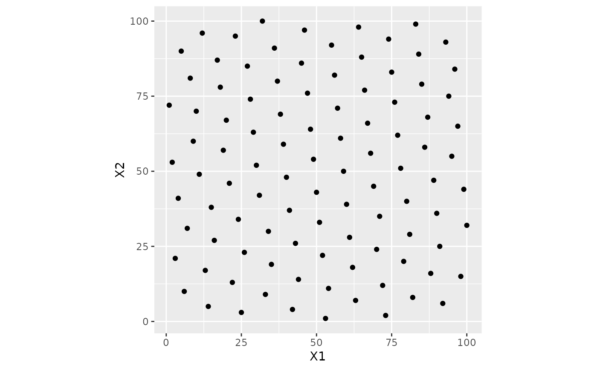

get_design.RdObtain a design from https://www.spacefillingdesigns.nl/ (if possible) based on how many characteristics (i.e. parameters) and size (i.e., number of grid points).
get_design(num_param, num_points, type = "any")An integer between two and ten for the number of characteristics/factors/parameters in the design.
An integer for the number of grid points requested. If
there is no corresponding design, an error is given (when using
get_design())
A character string with possible values> "any",
"audze_eglais", "max_min_l1", and "max_min_l2", A value of "any" will
choose the first design available (in alphabetical order).
A tibble (data frame) with columns named X1 to X{num_param}.
Each column is an integer for the ordered value of the real parameter values.
https://www.spacefillingdesigns.nl/, Husslage, B. G., Rennen, G., Van Dam, E. R., & Den Hertog, D. (2011). Space-filling Latin hypercube designs for computer experiments. Optimization and Engineering, 12, 611-630.
if (rlang::is_installed("ggplot2")) {
library(ggplot2)
two_param_l2 <- get_design(2, 100, type = "audze_eglais")
ggplot(two_param_l2, aes(X1, X2)) +
geom_point() +
coord_equal()
}

no_design <- try(get_design(2, 1000), silent = TRUE)
cat(as.character(no_design))
#> Error in get_design(2, 1000) :
#> No design with 1000 points. The closest has 500 points.